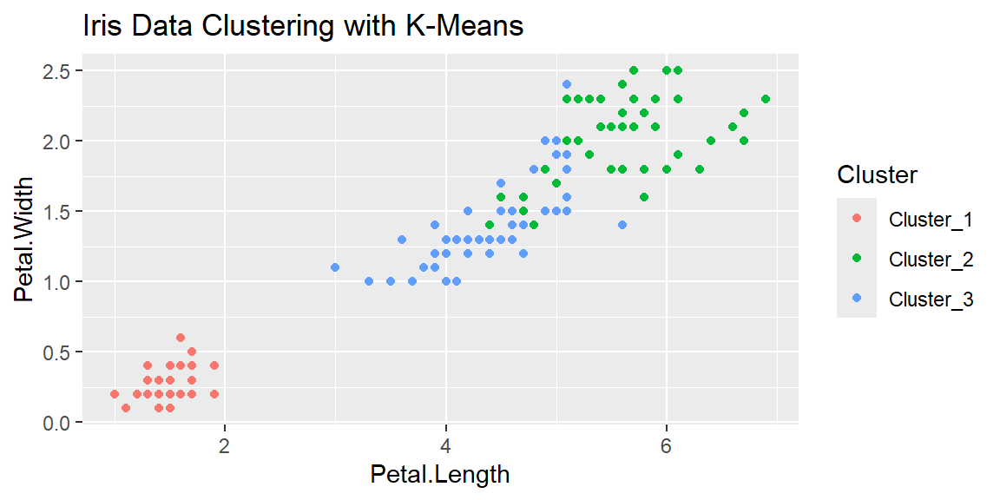
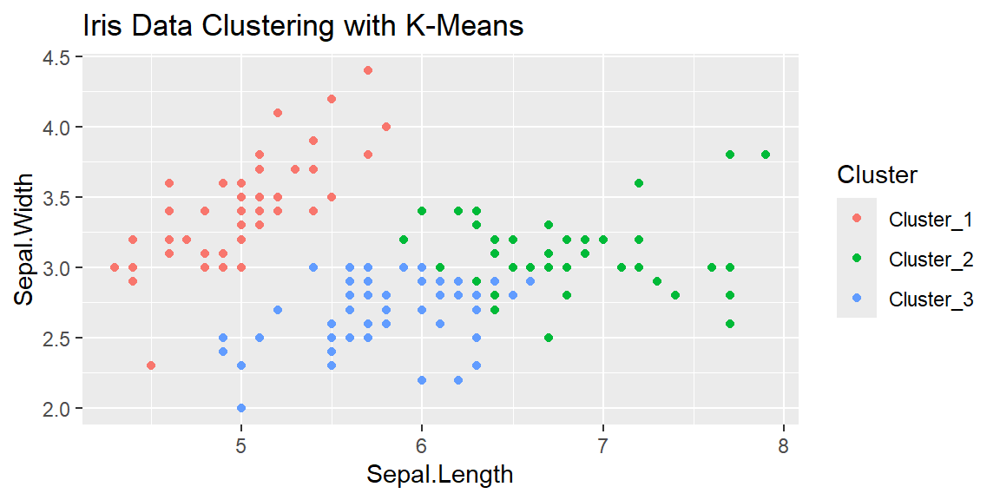
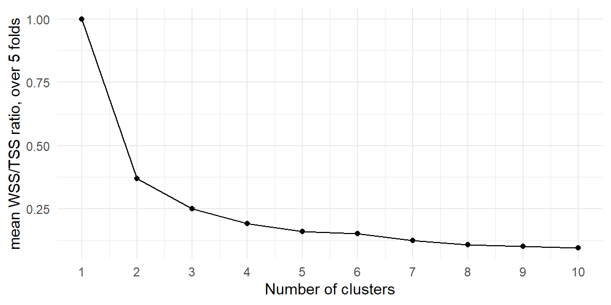
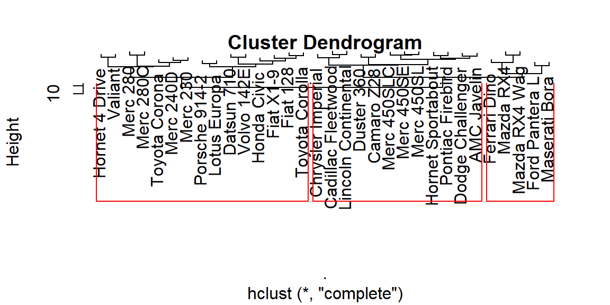
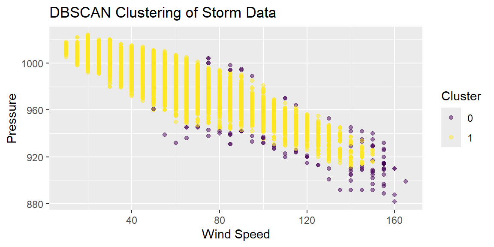

8 Clustering
8.1 Introduction
Clustering, as an essential component of unsupervised machine learning, plays a pivotal role in discovering the intrinsic patterns and structures within datasets without the guidance of predefined labels or categories. This characteristic makes it particularly valuable in exploratory data analysis, where the goal is to uncover hidden relationships, groupings, or patterns in the data that are not immediately apparent.
The versatility of clustering extends beyond mere data grouping; it is a powerful technique for pattern recognition, enabling the identification of coherent groups or structures within complex datasets. This capability is crucial across a spectrum of fields, from image analysis, where clustering can segment images into meaningful components, to information retrieval, enhancing search engines’ ability to organize and categorize information efficiently.
In bioinformatics, clustering facilitates the analysis of genetic and proteomic data, helping scientists uncover functional groups of genes or proteins and their roles in biological processes. Similarly, in the realm of social network analysis, clustering can identify communities or networks of individuals with shared interests or connections, providing insights into social dynamics and behaviors.
The introduction of clustering as a cornerstone technique highlights its foundational importance in predictive analytics and data mining. Its unsupervised nature lends itself to a wide range of applications, enabling analysts and researchers to approach data with the goal of discovery, rather than confirmation. This approach is fundamental in scenarios where the underlying structure of the data is unknown or complex, and where traditional supervised learning methods may not be applicable.
8.2 Types of Clustering Algorithms
Clustering algorithms can be broadly categorized into several types, each with its methodology and applications. Here are the most commonly used ones:
-
K-Means Clustering: This algorithm partitions the data into K clusters by minimizing the variance within each cluster. The process iteratively assigns each data point to the nearest cluster centroid and updates the centroid’s position based on the current members. K-Means is simple and efficient but requires the number of clusters to be specified a priori.
Example: Iris dataset
Load the Iris dataset and explore it. It’s important to understand the data’s structure and ensure it’s clean before applying any clustering algorithm.
data("iris") glimpse(iris)Rows: 150 Columns: 5 $ Sepal.Length <dbl> 5.1, 4.9, 4.7, 4.6, 5.0, 5.4, 4.6, 5.0, 4.4, 4.9, 5.4, 4.… $ Sepal.Width <dbl> 3.5, 3.0, 3.2, 3.1, 3.6, 3.9, 3.4, 3.4, 2.9, 3.1, 3.7, 3.… $ Petal.Length <dbl> 1.4, 1.4, 1.3, 1.5, 1.4, 1.7, 1.4, 1.5, 1.4, 1.5, 1.5, 1.… $ Petal.Width <dbl> 0.2, 0.2, 0.2, 0.2, 0.2, 0.4, 0.3, 0.2, 0.2, 0.1, 0.2, 0.… $ Species <fct> setosa, setosa, setosa, setosa, setosa, setosa, setosa, s…Although the Iris dataset is relatively clean, preprocessing might include scaling the features since K-Means is sensitive to the scale of the data.
dat_recipe = recipe(~ ., data = iris) |> step_rm(Species) |> #remove the labels since clustering is unsupervised step_normalize(all_numeric_predictors())Use
k_means()to cluster the data. Here, we need to specify the number of clusters. Since we know there are three species of iris in the dataset, we’ll usek = 3. However, in practice, you might use fine tuning methods to determine the optimal number of clusters.set.seed(1004) kmeans_model <- k_means(num_clusters = 3) |> set_engine("stats") dat_wf = workflow() |> add_recipe(dat_recipe) |> add_model(kmeans_model) fitted_model = dat_wf |> fit(data = iris)While there are four features, let’s visualize the clustering by plotting the clusters in terms of
Petal.LengthandPetal.Width.kmeans_summary <- fitted_model |> extract_fit_summary() iris_clustered <- bind_cols(iris, Cluster = kmeans_summary$cluster_assignments) ggplot(iris_clustered, aes(x = Petal.Length, y = Petal.Width, color = Cluster)) + geom_point() + labs(title = "Iris Data Clustering with K-Means")
Now let’s examine the other two features:
ggplot(iris_clustered, aes(x = Sepal.Length, y = Sepal.Width, color = Cluster)) + geom_point() + labs(title = "Iris Data Clustering with K-Means")
Tune the number of clusters
In the Iris data, we know that there should be three groups because the data was originally labeled based on Species. Usually when you use clustering, you don’t know what the groupings should be or even the number of clusters to use. Let’s redo the above example but this time tune the number of clusters.
set.seed(1004) #setup data for cross validation to tune the model dat_folds = vfold_cv(iris, v = 5, strata = Species) dat_recipe = recipe(~ ., data = iris) |> step_rm(Species) |> #remove the labels since clustering is unsupervised step_normalize(all_numeric_predictors()) kmeans_model <- k_means(num_clusters = tune()) |> set_engine("stats") #default range for num_clusters is 1 to 10 tuning_grid <- grid_regular( num_clusters(), levels = 10 ) dat_wf = workflow() |> add_recipe(dat_recipe) |> add_model(kmeans_model) #fine tune the model res <- tune_cluster( dat_wf, resamples = dat_folds, grid = tuning_grid, control = control_grid(save_pred = TRUE, extract = identity), metrics = cluster_metric_set(sse_within_total, sse_total, sse_ratio) ) res_metrics <- res |> collect_metrics() res_metrics |> filter(.metric == "sse_ratio") |> ggplot(aes(x = num_clusters, y = mean)) + geom_point() + geom_line() + theme_minimal() + ylab("mean WSS/TSS ratio, over 5 folds") + xlab("Number of clusters") + scale_x_continuous(breaks = 1:10)
We want to choose the number of clusters based on where the SSE Ratio starts to level off. That is, where does the decrease in the ratio become small. In the plot, we see this occurs at 3 or 4. So we should choose 3 or 4 clusters.
-
Hierarchical Clustering: Hierarchical clustering is a method of cluster analysis which seeks to build a hierarchy of clusters. Strategies for hierarchical clustering generally fall into two types:
- Agglomerative: This is a bottom-up approach where each observation starts in its own cluster, and pairs of clusters are merged as one moves up the hierarchy.
- Divisive: This is a top-down approach where all observations start in one cluster, and splits are performed recursively as one moves down the hierarchy.
The result of hierarchical clustering is a tree-based representation of the objects, which is also known as a dendrogram. The dendrogram illustrates the arrangement of the clusters produced by the corresponding analyses.
Example:
mtcarsFor this example, let’s use the
mtcarsdataset available in R’s datasets package. Themtcarsdataset comprises fuel consumption and 10 aspects of automobile design and performance for 32 automobiles.We will use an agglomerative method for our hierarchical clustering.
Let’s visualize the dendrogram to interpret our hierarchical clustering result.
plot(hclust_res) # Set labels=FALSE for a cleaner plot rect.hclust(hclust_res, k=3, border="red") # Optional: Highlight 3 clusters
-
DBSCAN (Density-Based Spatial Clustering of Applications with Noise): DBSCAN groups together closely packed points, marking as outliers the points that lie alone in low-density regions. This method does not require one to specify the number of clusters in advance, and it can find clusters of arbitrary shape.
Example:
stormsdataFor our example, we will use the
stormsdataset available in thedplyrpackage. Thestormsdataset contains information about tropical storms and hurricanes, and we’ll focus on clustering based on the storms’ wind speeds and pressures.library(tidyverse) library(tidymodels) library(dbscan) # Load and prepare the data data("storms", package = "dplyr") storm_data <- storms %>% select(wind, pressure) %>% na.omit() %>% filter(pressure > 0) # Filter out missing or erroneous pressure data # Scale the data scaled_data <- storm_data %>% scale() # DBSCAN clustering set.seed(123) dbscan_model <- dbscan(scaled_data, eps = .2, minPts = 10) # Visualize the clusters storm_data_clustered <- bind_cols(storm_data, cluster = dbscan_model$cluster) ggplot(storm_data_clustered, aes(x = wind, y = pressure, color = as.factor(cluster))) + geom_point(alpha = 0.5) + labs(title = "DBSCAN Clustering of Storm Data", x = "Wind Speed", y = "Pressure", color = "Cluster") + scale_color_viridis_d()
In this example, we perform clustering on the storms dataset based on wind speed and pressure, using DBSCAN through the dbscan package. The eps and minPts parameters would ideally be tuned based on the dataset characteristics and specific analysis goals. This process illustrates the application of DBSCAN in identifying natural groupings of storms without predefining the number of clusters, showcasing its ability to handle complex data structures and noise effectively.
Choosing the Right Algorithm
The choice of a clustering algorithm depends on several factors, including:
Nature of the Data: The algorithm must be suitable for the scale, dimensionality, and type of the data (e.g., numerical, categorical).
Desired Outcome: The definition of a “cluster” can vary by application (e.g., spherical clusters, density clusters), influencing the choice of algorithm.
Scalability and Efficiency: Large datasets require algorithms that can scale efficiently with data size.
Sensitivity to Parameters: Some algorithms, like K-Means, are sensitive to the choice of parameters (e.g., the number of clusters), which can affect their robustness and the reproducibility of the clustering.
Challenges in Clustering
While clustering is a powerful tool for exploratory data analysis, it faces several challenges:
Determining the Number of Clusters: Many algorithms require the number of clusters to be specified beforehand, which is not always obvious and may require domain knowledge or additional methods like the elbow method or silhouette analysis.
Dealing with High Dimensionality: As the dimensionality of the data increases, the distance between data points becomes less meaningful, a phenomenon known as the “curse of dimensionality.” Dimensionality reduction techniques may be necessary before clustering.
Sensitivity to Noise and Outliers: Clustering algorithms can be sensitive to noise and outliers, which can significantly affect the formation of clusters. Preprocessing steps to remove or reduce the influence of outliers are often necessary.